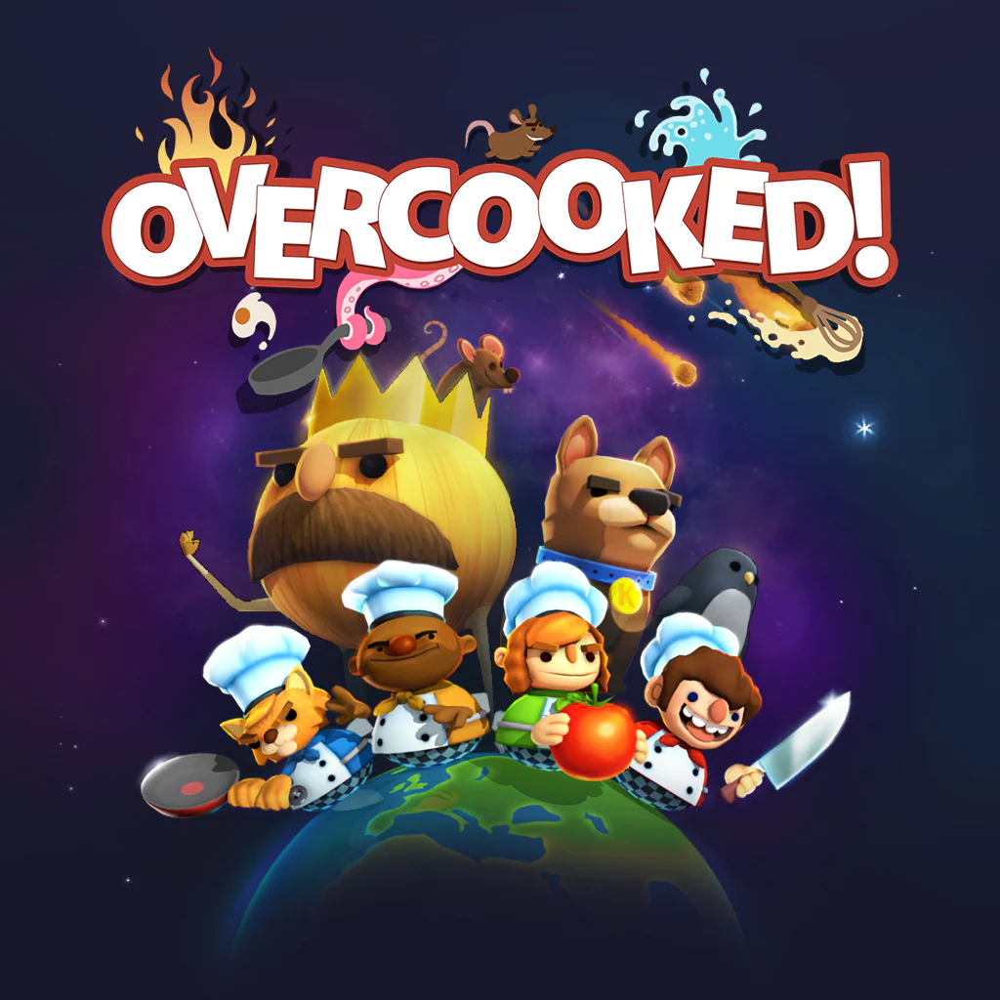

-

This is the 1 part
-

This is the 2 part
-
This is a special part
"Overcooked" is a cooperative cooking simulation game designed for multiplayer gameplay. In the game, players work together in a chaotic kitchen
environment to prepare and serve various dishes within a time limit. The challenge lies in coordinating tasks, managing resources, and overcoming obstacles as
the kitchen layout changes dynamically. With its fast-paced and humorous gameplay, "Overcooked"
fosters teamwork and communication among players, making it an entertaining and engaging experience for both casual and dedicated gamers alike.